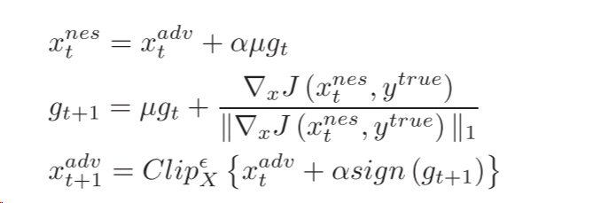
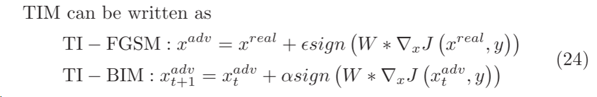
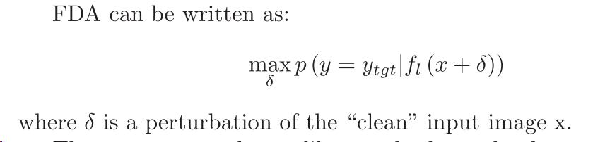

2023-3-A-Review-of-Adversarial-Attacks-in-Computer-Vision
基于转换的攻击，本综述系列的第三部分。看的迷迷糊糊的，主要是很多都不懂，先大致了解，以后用到了再补。
1 添加动量到迭代中
为了提高对抗样本的迁移能力，提出将基于优化的攻击与多种手段相结合。
1.1 MI-FGSM
在迭代过程中添加动量，比如 MI-FGSM攻击。动量法可以更快的收敛和更少的震荡。MI-FGSM算法可以被写出如下形式:
g就是动量，u为动量的衰减因子。由于每次迭代得到的动量大小不相同，所以对每次迭代得到的梯度进行归一化处理。
由于在黑盒条件下，生成的对抗样本能力不强。所以又提出了NI-FGSM方法。
1.2 NI-FGSM
NI-FGSM是NAG和I-FGSM的结合。NAG是常见的梯度下降法的一种变体，可以加速训练过程并提高收敛。
NAG可以写成：

g表示迭代t时的累计梯度，u表示衰减因子。每次迭代之前，NI-FGSM在前一个方向上累计梯度，然后对其更新。以前是对x求导，现在是对上一次迭代的x求导。
2 迭代过程中考虑输入变换
是一种数据扩展方法，包括旋转放大缩小。这不仅可以防止对抗性样本对模型的过拟合，而且可以提高对抗性样本的可移植性。白盒下只需要对一个样本进行优化，因为识别区域高度相关。但是黑盒条件下，可能有不同的识别区域，从而使得对抗样本很难保持对抗性。
我们希望的是对抗样本对被攻击的白盒模型的识别区域不敏感。对抗样本对被攻击的白盒模型的识别区域不敏感意味着对抗样本在不同的输入区域都能够成功地干扰模型的预测，而不仅仅是在特定的输入区域有效。
2.1 TIM
为了生成这样的样本，需要计算集合中所有图像的梯度，这是大量的计算。为了提高效率，文献中提出，在一定的假设下，对未转移图像进行卷积梯度法，其中卷积核是预定的。该方法可以与任何基于梯度的攻击方法（如FGSM等）相结合。来生成更多可转移和对抗性的样本。

W是高斯卷积核。
2.2 DIM
一种多样化的输入思想，他采用数据增强的思想，在将图像输入进模型之前，对输入样本进行随机变换。
2.3 SIM
优化还有另一种扩展模型的方法，因为dnn还有尺度不变性，所以相同的图像上原始图像和缩放图像的损失是相似的，缩放可以作为模型的扩展方法。
SIM基于尺度不变性，提出通过缩放输入图像来优化对抗性扰动，提高可转移性。
3 训练附加分类器
几乎所有的对抗攻击都依赖于网络输出层的信息，该攻击基于对类划分和层划分的深度特征分布的建模和开发，称为FDA。
3.1 FDA
基本思想是，计算FDA在层l的对抗扰动，首先需要使用截断的白盒模型和对应层的辅助模型g。g可以捕获逐层和逐类特征分布，对l层相对于c类特征分布的概率进行建模。损失函数为二元交叉熵，计算预测p和l。因此，在损失函数最小化的方向上扰动输入图像，使得p最大化，来生成对抗样本。
即：如果样本在中间特征空间的某个层具有与c类特征分布一致的特征，则它可能被分为c类。

FDA利用了中间特征分布，这些特征分布并没有隐含描述精确边界。
不懂，跳了。
4 基于生成的对抗转移
研究表明，扰动存在于大的连续区域中，而不是分散在多个不连续的小口袋中。此产生扰动时最重要的是考虑扰动的方向，而不是空间中的特定点。为了去捕捉未知的对抗性扰动，作者引入类似于Gan的生成模型。该方法成功地训练生成器网络来捕获未知的目标分布，而不需要任何训练样本。由此产生的模型几乎立即产生了针对迁移攻击的具有较大多样性的对抗性扰动，并且该方法可以有效地模拟同时欺骗多个深度模型的扰动。
只使用生成器来生成对抗性样本，以适应输入样本的扰动，这避免了迭代梯度计算的需要，并允许我们快速生成扰动，除了使用生成模型来创建对抗性扰动之外，还允许我们进一步训练更复杂的模型。此外，该研究还证明了由此产生的扰动可以在不同的模型中转移，这是一种迁移攻击。
5 通用对抗扰动
找到一个一般的扰动v，使得对于大多数图像x。
深度神经网络非常容易受到这种扰动的影响，尽管人眼无法区分。本文通过Deep fool生成一般扰动。该算法的目的是找到最小扰动v，使得Xi+v移出正确的分类区域Ri。该算法可以方便地计算VGG、Google LeNet、ResNet等不同模型的相应扰动，文章论证了这些一般扰动的存在性。
通过欺骗在没有数据的多个网络层中学习的特征，从而误导CNN，有效地生成通用扰动。这些扰动具有很好的推广性。Fast feature fool用于在不依赖数据的情况下生成通用扰动，通过超饱和多层学习的特征（取代“翻转标签”目标）来愚弄CNN，即通过向输入添加扰动，破坏每一层的特征来误导后续层的特征。沿着网络层次结构的累积干扰将使网络无法区分原始输入，从而在最后一层产生大量的预测误差。其实质是在目标cnn不提供任何数据的情况下，寻找一个能够在每一层产生最大假激活的扰动。
实验表明，数据相关性差的反而攻击效果好。
GD-UAP
作者将该方法应用于目标检测、语义分割等任务中，实现了多种攻击。本文证明了该扰动是无数据的。作者对提出的目标进行了全面的分析，包括：彻底比较GD-UAP方法与相关数据的相反部分，以及在存在各种防御机制的情况下评估UAP的实力。它将UAP攻击扩展到图像分类以外的视觉任务，并提出了一种目标模型，用于在最小先验信息下训练数据分布，以产生更强的干扰。
RHP
出了梯度Transformer模块来获得区域均匀对抗样本。其原理是增加同一区域内像素的相关性，从而造成区域均匀性扰动。基于这一观察，研究人员提出了一种变换范式和一个梯度Transformer模块来生成专门用于攻击防御的区域均匀扰动（RHP），研究人员通过攻击一系列防御模型的实验，证明了区域均匀扰动的有效性。使用语义分割任务来攻击和测试目标检测任务，证明了RHP的跨任务可移植性。